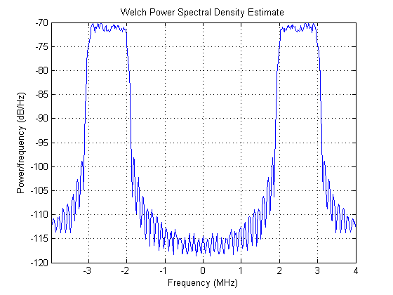
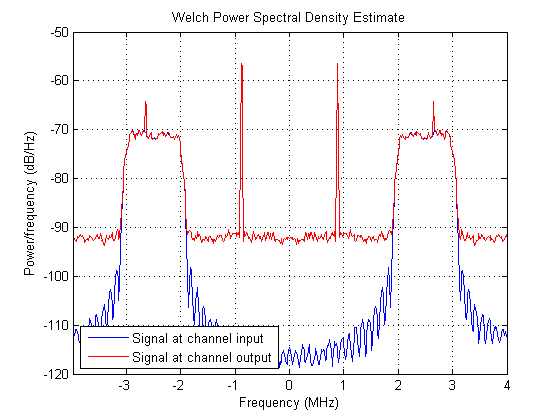
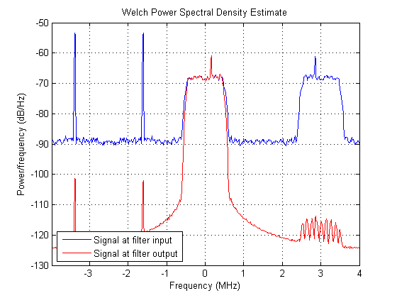
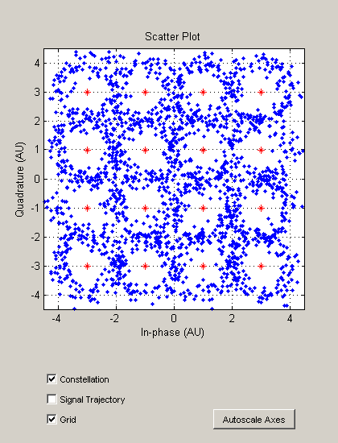
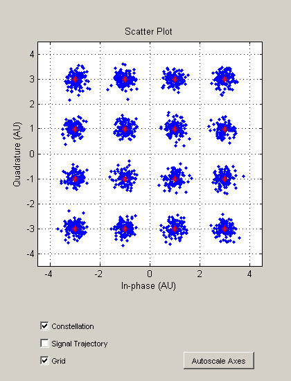
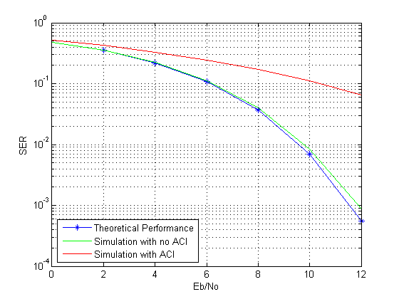

Passband Modulation with Adjacent Channel Interference
This demonstration shows how to use baseband modulators and demodulators with frequency upconversion and downconversion to simulate passband communication systems. In general, it is simpler and faster to model a system at complex baseband. However, there are some circumstances where it is preferable to model the system at real passband. An example of this is when an adjacent band tonal signal is processed with a nonlinearity, and causes interference in the band of interest. This demo illustrates this scenario by assuming a 16-QAM communications system transmitting in an additive white Gaussian noise (AWGN) channel with interference in its passband. A tone in an adjacent channel that has been processed by a cubic nonlinearity causes this interference.
Contents
Initialization
First, initialize variables that define simulation parameters, such as carrier frequency, number of samples representing a symbol, and noise level.
Fc = 2.5e6; % Carrier frequency (Hz) Rsym = 1e6; % Symbol rate (symbols/second) nSamps = 8; % Number of samples per symbol frameLength = 2048; % Number of symbols in a frame M = 16; % Modulation order (16-QAM) EbNo = 15; % Ratio of baseband bit energy to noise power spectral density (dB) % Calculate sampling frequency in Hz Fs = Rsym * nSamps; % Calculate passband SNR in dB. The noise variance of the baseband signal is % double that of the corresponding bandpass signal [1]. Increase the SNR value % by 10*log10(2) dB to account for this difference and have equivalent baseband % and passband performance. SNR = EbNo + 10*log10(log2(M)/nSamps) + 10*log10(2);
Initialize Measurement Tools
Initialize a scatter plot and a spectrum estimator to analyze signals at different points in the transmitter-receiver chain.
% Create a Welch spectrum estimator. specScope = spectrum.welch('Hamming',512); % Create a spectrum estimator options object to configure the spectrum % estimator. specOpts=psdopts(specScope); set(specOpts, 'Fs', Fs, 'SpectrumType','twosided','CenterDC',true); % Create a scatter plot scope for received symbols. scatScope = commscope.ScatterPlot('SamplingFrequency', Rsym, ... 'SamplesPerSymbol', 1); close(scatScope)
Baseband Modulation
The first step of simulating a passband communication system is to modulate the random data in the baseband. You generate random symbols, modulate them with a 16-QAM modulator, and apply pulse shaping using a square root raised cosine filter.
16-QAM Modulation
% Create a 16-QAM modulator. hMod = modem.qammod('M',M); % Set the expected constellation of the scatter plot scope. scatScope.Constellation = hMod.Constellation; scatScope.PlotSettings.Constellation = 'on'; scatScope.PlotSettings.ConstellationStyle = '*r'; % Generate random data symbols. b = randi([0 hMod.M-1], frameLength, 1); % Modulate the random data. txSym = modulate(hMod, b);
Pulse Shaping
After modulation, you apply pulse shaping using a square root raised cosine filter. You use the spectrum estimator to verify that the frequency spectrum of the baseband signal is centered at zero Hz, and that it has been filtered properly.
% Specify a square root raised cosine filter with a filter length of eight % symbols and a rolloff factor of 0.2. nSym = 8; % Length of the filter in symbols beta = 0.2; % Rolloff factor filterSpec = fdesign.pulseshaping(nSamps, 'Square root raised cosine', ... 'Nsym,Beta', nSym, beta); % Design the transmitter filter. hXmtFlt = design(filterSpec); % Apply pulse shaping by upsampling and filtering. Alternatively, you can use % an efficient multirate filter if you have a Filter Design Toolbox(TM) license. % See help for fdesign.interpolator for more information. x = filter(hXmtFlt, upsample(txSym, nSamps)); % Estimate spectrum of pulse shaped signal. psdProbe = psd(specScope, x, specOpts); hFig = figure;plot(psdProbe)

Frequency Upconversion
You apply frequency upconversion to obtain a passband signal around the specified carrier frequency. You achieve this by multiplying the complex baseband signal with a complex sinusoidal and taking the real part.
% Generate carrier. The sqrt(2) factor ensures that the power of the frequency % upconverted signal is equal to the power of its baseband counterpart. t = (0:1/Fs:(frameLength/Rsym)-1/Fs).'; carrier = sqrt(2)*exp(1i*2*pi*Fc*t); % Frequency upconvert to passband. xUp = real(x.*carrier); % Estimate spectrum. psdProbe = psd(specScope, xUp, specOpts); plot(psdProbe)
Channel Simulation
Simulate the communications channel as a passband real AWGN channel with an adjacent channel interference caused by a tone processed with a cubic nonlinearity.
% Create the passband interference by raising an adjacent channel tone to the % third power. Fint = Fc/3+50e3; interference = 0.7*cos(2*pi*Fint*t+pi/8).^3;
% Calculate the total signal power for the given pulse shape. Account for the % average power of the baseband 16-QAM upsampled signal. For a constellation % that contains points with +/- 1 and +/- 3 amplitude levels, the average power % of a 16-QAM signal is 10 W. The upsampling operation reduces this power by a % factor of nSamps leading to a net power of 10*log10(10/nSamps), or 0.97 dBW % for nSamps = 8. avgPwrBaseBand16QAM = 10*log10(sum(abs(hMod.Constellation).^2)/(M*nSamps)); sigPower = 10*log10(sum(hXmtFlt.Numerator.^2)) + avgPwrBaseBand16QAM; % Add white Gaussian noise based on the computed signal power. yUp = awgn(xUp, SNR, sigPower); % Add the adjacent channel interference to the signal. yUpACI = yUp + interference; % Estimate spectrum of the noisy signal and compare it to the spectrum of the % original upconverted signal. psdProbe = psd(specScope, yUpACI, specOpts); figure(hFig);hold on;hLine=plot(psdProbe);set(hLine,'Color',[1 0 0]); legend('Signal at channel input', 'Signal at channel output','Location','southwest')
Frequency Downconversion
You apply frequency downconversion to obtain a baseband signal before demodulation. You achieve this by multiplying the complex passband signal with a complex sinusoidal. The following code assumes perfect phase synchronization, so it uses the same carrier signal as the transmitter.
% Downconvert to baseband (Assumes perfect synchronization). yACI = yUpACI.*conj(carrier); % Estimate spectrum of the downconverted signal with adjacent channel % interference. psdProbe = psd(specScope, yACI, specOpts); figure(hFig); hold off; plot(psdProbe);

Baseband Demodulation
Once the signal is in baseband, you can apply matched filtering. Note that the matched filter also removes the unwanted higher frequency components due to frequency downconversion.
Matched Filtering
% Make a copy of the transmitter filter and use it as matched filter. hRcvFlt = copy(hXmtFlt); % Filter the frequency downconverted signal. rcvSymACI = filter(hRcvFlt, yACI); % Estimate spectrum of the filtered signal and compare it to the spectrum of the % signal at the filter input. psdProbe = psd(specScope, rcvSymACI, specOpts); figure(hFig);hold on;hLine=plot(psdProbe);set(hLine,'Color',[1 0 0]); legend('Signal at filter input', 'Signal at filter output','Location','southwest') % Amplify the signal to compensate for the power loss caused by pulse shaping % and matched filtering. This places the received signal symbols around the % expected 16-QAM constellation points. rcvSymACI = nSym*rcvSymACI;
Demodulate
After matched filtering, you downsample and demodulate the 16-QAM signal to obtain the data symbols.
% Downsample the filtered signal. Discard the first nSym symbols due to filter % delay. e2eDelay = nSamps*nSym; rcvSymDownACI = rcvSymACI(e2eDelay+1:nSamps:end); % Obtain the scatter plot of the received signal with adjacent channel % interference. update(scatScope, rcvSymDownACI) % Create demodulator. hDemod = modem.qamdemod(hMod); % Demodulate received symbols and count the number of symbol errors. xHatACI = demodulate(hDemod, rcvSymDownACI); numErr = sum(xHatACI~=b(1:end-nSym))
numErr = 550
Repeat the steps above to obtain received symbols without adjacent channel interference. The symbol error rate (SER) results of the interference-free passband 16-QAM system should match the theoretical SER for a 16-QAM baseband system in an AGWN channel.
y = yUp.*conj(carrier);
rcvSym = filter(hRcvFlt, y);
rcvSym = nSym*rcvSym;
rcvSymDown = rcvSym(e2eDelay+1:nSamps:end);
scatScope2 = copy(scatScope);
% Update the scatter plot for the interference-free received symbols.
update(scatScope2, rcvSymDown)
xHat = demodulate(hDemod, rcvSymDown);
numErr = sum(xHat~=b(1:end-nSym))
numErr =
0
 Symbol Error Rate Curves
To obtain SER curves for the 16-QAM communications system with and without adjacent channel interference in the passband, you can format the steps of this demo into a for-loop to run simulations for several transmitted frames. In such simulations, you need to carry the state of the system components, such as the filter, the carrier, and the nonlinear adjacent channel tonal interference, from one iteration to the next. Setting the PersistentMemory property of the filters to true automatically saves the filter states. You need to manually keep track of the carrier and tone phases by generating a continuous time vector (t). For an example function, type edit commdoc_passband_mod.m on the command line.
Using the simulation function, simulations for Eb/No in the [0, 12] dB interval were performed for 2e3 transmissions of frames of length 5e3 symbols. The commdoc_passband_mod_results.mat file contains the results of the simulations. The interference tone amplitude was equal to 0.45 in these simulations. You can compare the results of 16-QAM passband modulation with and without adjacent channel interference and the theoretical curve of 16-QAM modulation in a baseband AWGN channel by loading the aforementioned file.
% Theoretical SER for 16-QAM in AWGN load commdoc_passband_mod_results.mat [~,serAWGN] = berawgn(EbNoVect,'qam',16); figure(hFig); hold off; semilogy(EbNoVect,serAWGN,'-*'); hold on; semilogy(EbNoVect,passbandSER,'g'); semilogy(EbNoVect,passbandSERACI,'r'); legend('Theoretical Performance', 'Simulation with no ACI', 'Simulation with ACI','Location','southwest') grid on; xlabel('Eb/No'), ylabel('SER')
The truncated root raised cosine filter causes the slight degradation seen in the interference-free simulation results.
Summary
This demo illustrated how to use a baseband modulation object together with frequency upconversion and downconversion to simulate a passband communication system with a cubic nonlinearity acting on an adjacent channel. Even though it is usually simple and faster to simulate a system at complex baseband, there are some circumstances where it is preferable to model the system at real passband. The demo presented an example for the case when an adjacent band signal is processed with a nonlinearity, and causes interference in the band of interest.
Selected Bibliography
- W. Zhang, M. J. Miller, "Baseband Equivalents in Digital Communication System Simulation", IEEE® Transactions on Education, vol. 35, No. 4, November 1992.